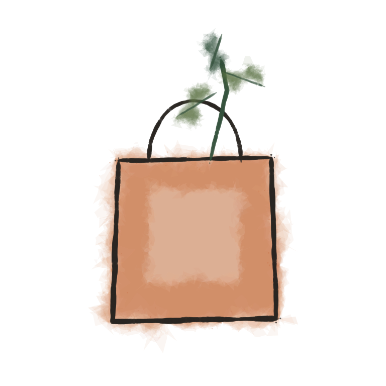
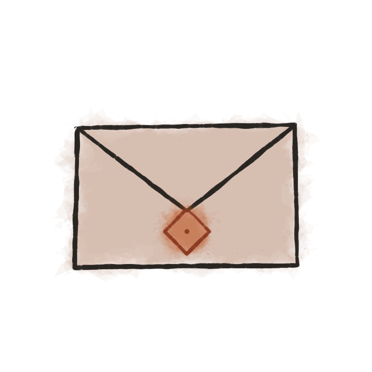
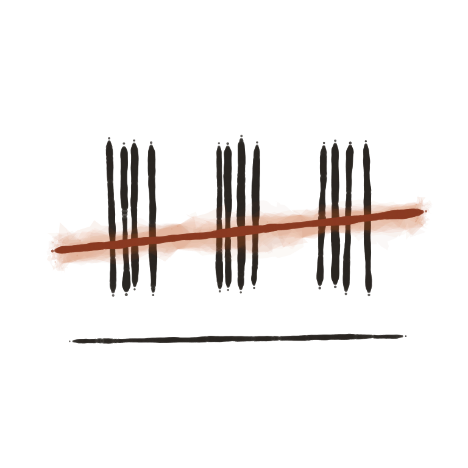
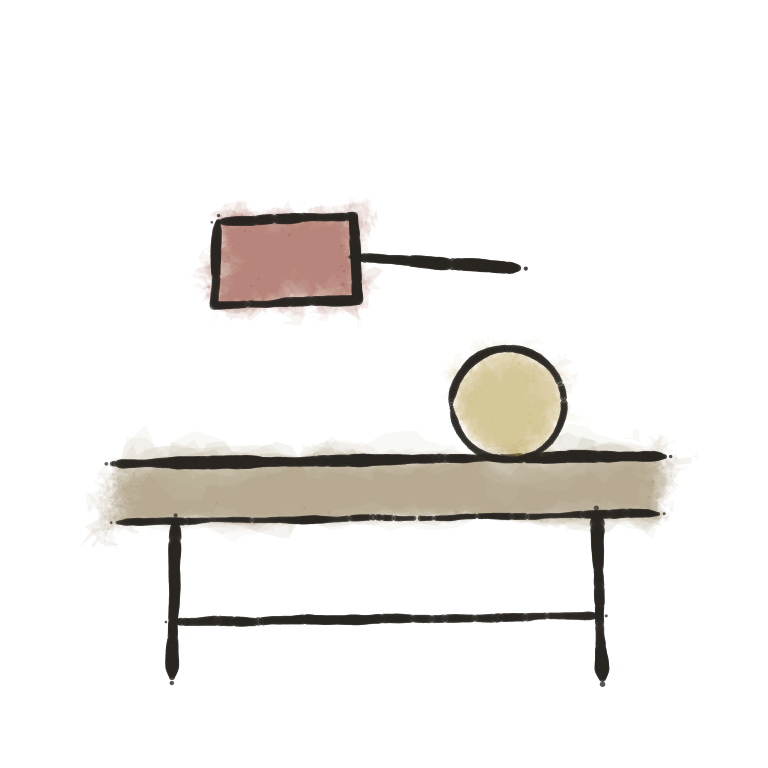

One hand, three jobs. The full plates carry the romance and the icons do the interface
work; between them sat a gap — the quiet, service moments where a plate is too loud and a
24px icon is too small. An empty bag. A search that found nothing. A care instruction. The
spot register fills that gap with small paintings: pigment washes pooling
at their own edges, granulation settling into the paper, and a drawn carbon contour that
never quite agrees with the wash it encloses — the registration slip that signs every
plate in the system. Each spot touches at most four pigments, and one of them
carries the meaning.
The spots are grown, not drawn: tools/spot-painter.html is a seeded
painting algorithm (its manifesto is tools/spot-painter.md), and the shipped
set is seed 7 at 768px masters. The same seed regrows the identical set forever; a
neighbouring seed grows its sibling. They are flagged made-here in
docs/PROVENANCE.md and claim no provenance from the painted plates.

empty-bagThe bag is emptyno-resultsNothing by that name

letter-sentOrder confirmed

run-closedAll twelve gone

benchMade by handpolish-clothPolish with the clothkeep-dryKeep above the waterpouchStore in the pouch
Rules
Where a spot goes, and where it never does
Service, not romanceSpots take the service surfaces: empty states, care and
sizing instructions, transactional email, booking confirmations. A spot never opens a
page, never sells a piece, and never sits on the same surface as a full plate — beside a
plate, the plate wins and the spot goes.
ConstructionPainted at 768px masters by the seeded engine: recursive-deformation
washes, pooled edges, granulation, and a stamped-daub carbon line with dry-brush dropout.
Rendered at 96–150px, at 72px minimum, at 200px maximum. Never recoloured, never given a
background of its own — the ground is transparent so the surface's paper is the
painting's paper.
One accentAt most four pigments per spot, and exactly one — aegean, terracotta,
saffron or olive — on the element that carries the meaning.
Words beside itLike an icon, a spot never carries meaning alone: the annotation
line under it says the thing plainly. "All twelve gone." "Keep above the water."
The motif law holdsA spot never repaints a motif — no grown octopus, no grown
sun, no grown spiral. Motifs are lifted from finished plates and belong to places; spots
depict objects from the bench and the shop, nothing with a place's name on it.
Regrowing the setChange a composition or add a subject in
tools/spot-painter.html, choose a seed on the sheet
(?mode=sheet&seed=N), render each spot at 768 with a transparent ground,
and re-ship the whole set together — the register is one painting session, never a mixed
batch of seeds.
In use
The empty states, set as they ship
The bag is empty
Nothing kept here yet. The current runs are on the collections page.
Nothing by that name
Try a place — Psiloritis, Livyko, Elia, Knosos — or browse all four runs.
All twelve gone
This run is closed and stays on its page. We will make more, but not the same.